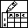

Error Cluster From Error Code.vi
C:\Program Files (x86)\National Instruments\LabVIEW 2014\vi.lib\Utility\error.llb\Error Cluster From Error Code.vi

UTILITY Power Inputs Control.ctl
C:\Technology Lab\NI-2010\Trunk\Utility\Type Definitions\UTILITY Power Inputs Control.ctl
WT300 IEC 2015 Setup.vi
C:\Technology Lab\NI-2010\Drivers\Yokogawa WT300 Series\Custom Examples\WT300 IEC 2015 Setup.vi
Agilent 34970.lvlib:Conf Temperature.vi
C:\Technology Lab\NI-2010\Drivers\Agilent 34972\Public\Configure\Advanced Configure\Conf Temperature.vi
Agilent 34970 Scale and Setup Voltage.vi
C:\Technology Lab\NI-2010\Drivers\Agilent 34972\Examples\Agilent 34970 Scale and Setup Voltage.vi
Agilent 34970.lvlib:Initialize.vi
C:\Technology Lab\NI-2010\Drivers\Agilent 34972\Public\Initialize.vi
Agilent 34970.lvlib:Conf Scan List.vi
C:\Technology Lab\NI-2010\Drivers\Agilent 34972\Public\Configure\Advanced Configure\Conf Scan List.vi
Agilent 34970.lvlib:Revision Query.vi
C:\Technology Lab\NI-2010\Drivers\Agilent 34972\Public\Utility\Revision Query.vi
VISA Open Access Mode.ctl
C:\Program Files (x86)\National Instruments\LabVIEW 2014\vi.lib\Instr\_visa.llb\VISA Open Access Mode.ctl
Laurel Meter Serial.vi
C:\Technology Lab\NI-2010\Drivers\Laurel Meter\Main\Laurel Meter Serial.vi

DOE Capacity Measurments.ctl
C:\Technology Lab\NI-2010\Trunk\Washer DOE\Type Definitions\DOE Capacity Measurments.ctl

File Setup.lvlib:Save File DOE Configuration State.ctl
C:\Technology Lab\NI-2010\Trunk\Utility\Save File\File Setup (Public)\Type Definition\Save File DOE Configuration State.ctl
DOE Capacity Measurment.vi
C:\Technology Lab\NI-2010\Trunk\Washer DOE\Panels\DOE Capacity Measurment.vi
Add State(s) to Queue__jki_lib_state_machine.vi
C:\Program Files (x86)\National Instruments\LabVIEW 2014\vi.lib\addons\_JKI Toolkits\State Machine\_jki_lib_state_machine.llb\Add State(s) to Queue__jki_lib_state_machine.vi
APLUS IEC 2015 Setup.vi
C:\Technology Lab\NI-2010\Drivers\APLUS\Main\APLUS IEC 2015 Setup.vi
Parse State Queue__jki_lib_state_machine.vi
C:\Program Files (x86)\National Instruments\LabVIEW 2014\vi.lib\addons\_JKI Toolkits\State Machine\_jki_lib_state_machine.llb\Parse State Queue__jki_lib_state_machine.vi
WT500 IEC 2015 Setup.vi
C:\Technology Lab\NI-2010\Drivers\Yokogawa WT500\Main\WT500 IEC 2015 Setup.vi
WT210 IEC 2015 Setup.vi
C:\Technology Lab\NI-2010\Drivers\Yokogawa WT200 Series\Examples\WT210 IEC 2015 Setup.vi

File Setup.lvlib:Save File DOE File Path Control.ctl
C:\Technology Lab\NI-2010\Trunk\Utility\Save File\File Setup (Public)\Type Definition\Save File DOE File Path Control.ctl

File Setup.lvlib:Save File DOE Model Information.ctl
C:\Technology Lab\NI-2010\Trunk\Utility\Save File\File Setup (Public)\Type Definition\Save File DOE Model Information.ctl
DOE Final RMC.vi
C:\Technology Lab\NI-2010\Trunk\Washer DOE\Panels\DOE Final RMC.vi
Laurel Gather Flow Rates Routine.vi
C:\Technology Lab\NI-2010\Drivers\Laurel Meter\Main\Laurel Gather Flow Rates Routine.vi

DOE Front Panel Meters.ctl
C:\Technology Lab\NI-2010\Trunk\Washer DOE\Type Definitions\DOE Front Panel Meters.ctl
UTILITY Read Get Last Dataset.vi
C:\Technology Lab\NI-2010\Trunk\Utility\UTILITY Read Get Last Dataset.vi

GEA2 Commands Washer logData.ctl
C:\Technology Lab\NI-2010\Trunk\Utility\GEA2 Commands\Type Definitions\GEA2 Commands Washer logData.ctl
Custom Pallet DBL.ctl
C:\Technology Lab\NI-2010\Trunk\Utility\Custom Pallet Controls\Custom Pallet DBL.ctl

DOE Dishwasher Events.ctl
C:\Technology Lab\NI-2010\Trunk\Washer DOE\Type Definitions\DOE Dishwasher Events.ctl

GEA2.ctl
C:\Technology Lab\NI-2010\Trunk\Washer DOE\Configuration\GEA2.ctl

Avery Weight Tronix IP Address.ctl
C:\Technology Lab\NI-2010\Drivers\Avery Weight Tronix\Type Definitions\Avery Weight Tronix IP Address.ctl

DOE Test Fixture Hardware.ctl
C:\Technology Lab\NI-2010\Trunk\Washer DOE\Type Definitions\DOE Test Fixture Hardware.ctl

DOE Main Control.ctl
C:\Technology Lab\NI-2010\Trunk\Washer DOE\Type Definitions\DOE Main Control.ctl

Custom Pallet Timer.ctl
C:\Technology Lab\NI-2010\Trunk\Utility\Custom Pallet Controls\Custom Pallet Timer.ctl
MB Ethernet Master Query Write Single Coil (poly).vi
C:\Program Files (x86)\National Instruments\LabVIEW 2014\vi.lib\NI Modbus.llb\MB Ethernet Master Query Write Single Coil (poly).vi
i.png)
Read From Spreadsheet File (string).vi
C:\Program Files (x86)\National Instruments\LabVIEW 2014\vi.lib\Utility\file.llb\Read From Spreadsheet File (string).vi
UTILITY Timeout Calc.vi
C:\Technology Lab\NI-2010\Trunk\Utility\UTILITY Timeout Calc.vi

Advantech DAQ Get Data.vi
C:\Technology Lab\NI-2010\Drivers\Advantech\Main\Advantech DAQ Get Data.vi

Write To Spreadsheet File (string).vi
C:\Program Files (x86)\National Instruments\LabVIEW 2014\vi.lib\Utility\file.llb\Write To Spreadsheet File (string).vi

Clear Errors.vi
C:\Program Files (x86)\National Instruments\LabVIEW 2014\vi.lib\Utility\error.llb\Clear Errors.vi
WT500 Get Power Data.vi
C:\Technology Lab\NI-2010\Drivers\Yokogawa WT500\Main\WT500 Get Power Data.vi
WT210 Get Data.vi
C:\Technology Lab\NI-2010\Drivers\Yokogawa WT200 Series\Examples\WT210 Get Data.vi
WT300 Get Data.vi
C:\Technology Lab\NI-2010\Drivers\Yokogawa WT300 Series\Custom Examples\WT300 Get Data.vi
APLUS Camille Bauer Driver.vi
C:\Technology Lab\NI-2010\Drivers\APLUS\Main\APLUS Camille Bauer Driver.vi
Avery Weight Tronix Driver.vi
C:\Technology Lab\NI-2010\Drivers\Avery Weight Tronix\Main\Avery Weight Tronix Driver.vi

Trim Whitespace.vi
C:\Program Files (x86)\National Instruments\LabVIEW 2014\vi.lib\Utility\error.llb\Trim Whitespace.vi
General Error Handler.vi
C:\Program Files (x86)\National Instruments\LabVIEW 2014\vi.lib\Utility\error.llb\General Error Handler.vi
MB Ethernet Master Query (poly).vi
C:\Program Files (x86)\National Instruments\LabVIEW 2014\vi.lib\NI Modbus.llb\MB Ethernet Master Query (poly).vi
UTILITY System Time.vi
C:\Technology Lab\NI-2010\Trunk\Utility\UTILITY System Time.vi
UTILITY 1D String to 1D DBL.vi
C:\Technology Lab\NI-2010\Trunk\Utility\UTILITY 1D String to 1D DBL.vi

Write To Spreadsheet File.vi
C:\Program Files (x86)\National Instruments\LabVIEW 2014\vi.lib\Utility\file.llb\Write To Spreadsheet File.vi
Get IND560 Scale Data.vi
C:\Technology Lab\NI-2010\Drivers\IND560 Scale Monitor\Get IND560 Scale Data.vi
Read From Spreadsheet File.vi
C:\Program Files (x86)\National Instruments\LabVIEW 2014\vi.lib\Utility\file.llb\Read From Spreadsheet File.vi

UTILITY Power Data.ctl
C:\Technology Lab\NI-2010\Trunk\Utility\Type Definitions\UTILITY Power Data.ctl

FileVersionInformation.ctl
C:\Program Files (x86)\National Instruments\LabVIEW 2014\vi.lib\Platform\fileVersionInfo.llb\FileVersionInformation.ctl

File Setup.lvlib:Save File DOE Data Save Filepaths.ctl
C:\Technology Lab\NI-2010\Trunk\Utility\Save File\File Setup (Public)\Type Definition\Save File DOE Data Save Filepaths.ctl
UTILITY This VIs Path.vi
C:\Technology Lab\NI-2010\Trunk\Utility\UTILITY This VIs Path.vi
File Setup.lvlib:Save File DOE File Setup.vi
C:\Technology Lab\NI-2010\Trunk\Utility\Save File\File Setup (Public)\Save File DOE File Setup.vi

File Setup.lvlib:Save File DISH Dishwasher Details.ctl
C:\Technology Lab\NI-2010\Trunk\Utility\Save File\File Setup (Public)\Type Definition\Save File DISH Dishwasher Details.ctl
YKMW100 DOE Dishwasher Channel Settings.vi
C:\Technology Lab\NI-2010\Drivers\Yokogawa MW100\Main\YKMW100 DOE Dishwasher Channel Settings.vi
UTILITY E-Time.vi
C:\Technology Lab\NI-2010\Trunk\Utility\UTILITY E-Time.vi
Agilent 34970 Read Continuous.vi
C:\Technology Lab\NI-2010\Drivers\Agilent 34972\Examples\Agilent 34970 Read Continuous.vi

File Setup.lvlib:Save File DOE LabView Program.ctl
C:\Technology Lab\NI-2010\Trunk\Utility\Save File\File Setup (Public)\Type Definition\Save File DOE LabView Program.ctl
DOE Testing Quality Check.vi
C:\Technology Lab\NI-2010\Trunk\Washer DOE\Support VIs\DOE Testing Quality Check.vi
UTILITY Agilent Scan List Permutation.vi
C:\Technology Lab\NI-2010\Trunk\Utility\UTILITY Agilent Scan List Permutation.vi
DOE Initialize Front Panel Controls.vi
C:\Technology Lab\NI-2010\Trunk\Washer DOE\Support VIs\DOE Initialize Front Panel Controls.vi

UTILITY TC Coefficients.ctl
C:\Technology Lab\NI-2010\Trunk\Utility\Type Definitions\UTILITY TC Coefficients.ctl
Newport ITX-D3N.vi
C:\Technology Lab\NI-2010\Drivers\Newport ITX-D3N\Main\Newport ITX-D3N.vi
YKMW100 Receive String-clear buff.vi
C:\Technology Lab\NI-2010\Drivers\Yokogawa MW100\Main\YKMW100 Receive String-clear buff.vi

YKMW100 DISH Channel Settings.ctl
C:\Technology Lab\NI-2010\Drivers\Yokogawa MW100\Type Definitions\YKMW100 DISH Channel Settings.ctl
Set Busy.vi
C:\Program Files (x86)\National Instruments\LabVIEW 2014\vi.lib\Utility\cursorutil.llb\Set Busy.vi
Off Mode Standby Mode Power Measure SM.vi
C:\Technology Lab\NI-2010\Trunk\Utility\Standby Power\Main\Off Mode Standby Mode Power Measure SM.vi
Unset Busy.vi
C:\Program Files (x86)\National Instruments\LabVIEW 2014\vi.lib\Utility\cursorutil.llb\Unset Busy.vi
YKMW100 App Example Measurement Channel Data.vi
C:\Technology Lab\NI-2010\Drivers\Yokogawa MW100\YKMW100.llb\YKMW100 App Example Measurement Channel Data.vi

DOE Parse Temperature and Voltage.vi
C:\Technology Lab\NI-2010\Trunk\Washer DOE\Support VIs\DOE Parse Temperature and Voltage.vi
DOE Kitchen Data.vi
C:\Technology Lab\NI-2010\Trunk\Washer DOE\Support VIs\DOE Kitchen Data.vi
UTILITY Power Analyzer.ctl
C:\Technology Lab\NI-2010\Trunk\Utility\Type Definitions\UTILITY Power Analyzer.ctl